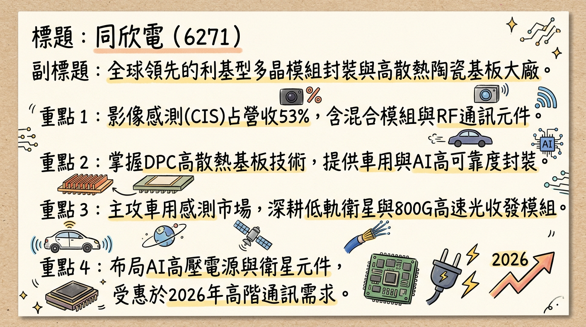
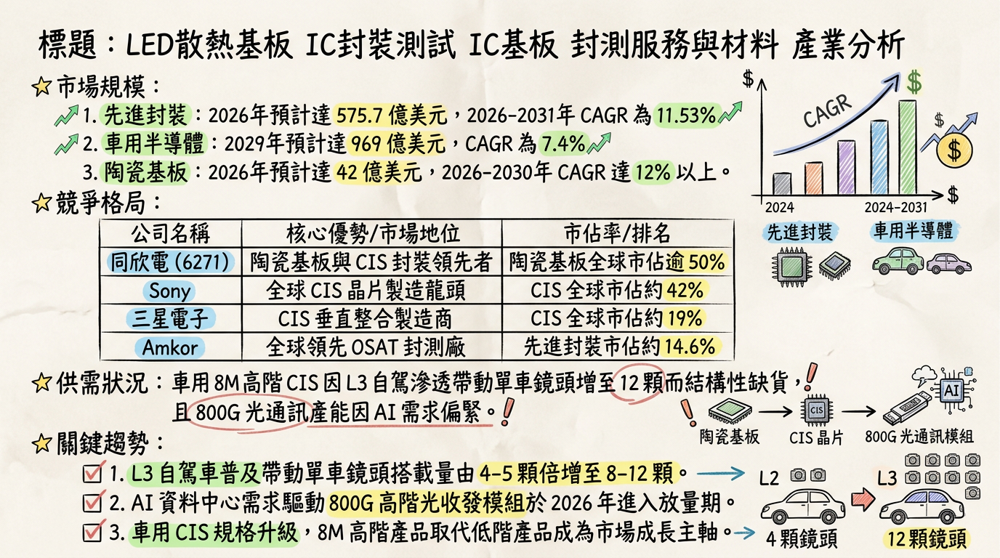
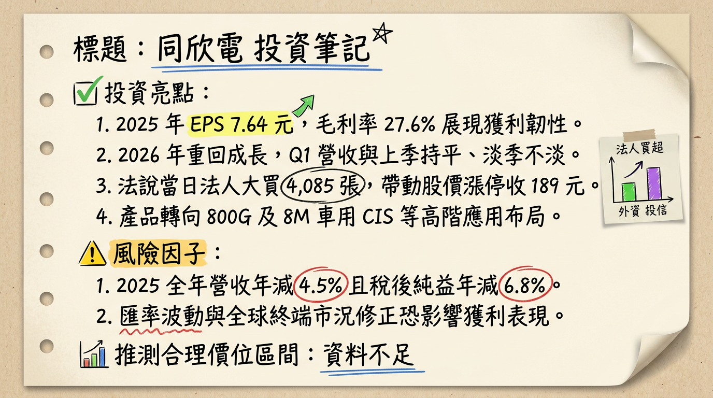

6271 同欣電 深度研究報告
一句話摘要
「AI 光通訊放量與車用 CIS 規格升級雙引擎帶動，同欣電 2026 年重回成長軌道，下半年動能尤為強勁。」
公司概覽
同欣電（Tong Hsing Electronic）為全球領先的利基型多晶模組封裝與陶瓷基板製造商，隸屬於國巨集團。其核心優勢在於高散熱、高可靠度的封裝解決方案，為 SpaceX 及全球車用 CIS 三巨頭（Onsemi、Sony、OmniVision）之核心夥伴。
營收結構（2025 Q4 - 2026 Q1）
| 業務板塊 | 營收佔比 | 核心應用 / 產品 |
|---|
| 影像感測 (CIS) | 52% ~ 53% | 車用鏡頭 (2M/5M/8M)、RW 晶圓重組技術 |
| 混合積體電路模組 | 18% ~ 23% | 車用壓力感測器、生醫感測器 |
| 陶瓷基板 | 17% ~ 18% | DPC 散熱基板、車用照明、AI HVDC 高壓電源 |
| 高頻無線通訊 (RF) | 7% ~ 11% | 400G/800G 光收發模組、低軌衛星 (LEO) 模組 |
核心競爭優勢
利基型封裝技術壁壘： 擁有獨家 RW（晶圓重組） 技術與 DPC（直接電鍍銅） 陶瓷基板技術，能提供高可靠度、耐高溫、高散熱的解決方案，優於傳統封測廠。
國巨集團資源整合： 透過集團與力智、富鼎的合作，提供「PMIC + 功率元件 + 陶瓷封裝」的一站式（One-Stop Shop）模組方案，強化 AI 與 EV 市場滲透率。
高畫素 CIS 領先地位： 隨 ADAS 升級，同欣電具備整合測試與封裝的技術，掌握 8M 高階產品市場，單價（ASP）較傳統製程高出 30-50%。
財務分析
月營收趨勢表格
| 月份 | 營收金額 (億新台幣) | 月增率 (MoM) | 年增率 (YoY) |
|---|
| 2026/01 | 9.52 | +5.78% | +5.21% |
| 2025/12 | 9.00 | -4.85% | -5.42% |
| 2025/11 | 9.46 | -2.66% | -8.79% |
| 2025/10 | 9.72 | -0.12% | -2.28% |
| 2025/09 | 9.73 | +2.02% | -0.56% |
| 2025/08 | 9.54 | +3.30% | -8.66% |
季度數據與年度趨勢
- 2025 Q4 表現： 營收 28.22 億元，毛利率 28.9%，單季 EPS 2.23 元。
- 年度 EPS 趨勢：
* 2024 (實際)：8.20 元
* 2025 (實際)：7.64 元 (年減 6.8%)
* 2026 (預估)：8.46 元 ~ 9.15 元 (重回成長)
法說會重點（2026/02/25）
營運指引： 2026 Q1 預計「淡季不淡」，營收與 2025 Q4 持平，全年營收成長目標為中個位數（約 5%）。
800G 光通訊： 2025 年底小量出貨，預計 2026 年下半年顯著放量。
車用規格： 客戶端對 8M 高畫素產品需求轉強，且 AMB 基板已通過認證，預計下半年 Ramp-up。
資本支出： 2026 年預計投入 14 億元，重點在 800G 生產線與高精度光纖對準（FAU）技術。
券商觀點
| 券商名稱 | 報告日期 | 評等 | 目標價 | 2026 預估 EPS |
|---|
| 元富證券 | 2026/03/02 | 買進 | 250 元 | 9.15 元 |
| 中信投顧 | 2026/03/03 | 買進 | 210 元 | 8.35 元 |
| FactSet 綜合 | 2026/03/04 | 中立/偏多 | 207.5 元 | 8.46 元 |
財報深度分析
利潤率趨勢表格
| 季度 | 毛利率 (GM) | 營業利益率 (OPM) | 稅後淨利率 (NI%) |
|---|
| 2025 Q4 | 28.9% | 14.3% | 15.8% |
| 2025 Q3 | 27.24% | 13.40% | 16.80% |
| 2025 Q2 | 26.60% | 13.88% | 2.41% (業外損失影響) |
| 2025 Q1 | 27.74% | 14.07% | 20.05% (含處分利益) |
- 存貨分析： 2025 Q3 存貨週轉天數降至 66.14 天（Q1 為 74.14 天），顯示去化健康。
- 資本支出： 由 2023 年 27.4 億元的高峰降至 2026 年穩定的 14 億元，折舊壓力已顯著緩解。
股權異動
- 申報轉讓： 2025 - 2026/03 近期無董監事重大轉讓，籌碼面相對穩定。
- 股利政策： 2026/02/25 決議配發現金股利 3.0 元。
- 財務體質： 負債比率僅 23.41%，帳上現金充足，無發行可轉債 (CB)。
產業分析
市場規模與趨勢
- 先進封裝市場： 2026 年全球預估達 575.7 億美元，CAGR 11.53%。
- 車用 CIS： Level 3 自駕車帶動單車鏡頭數由 4-5 顆倍增至 8-12 顆。
競爭格局比較
| 公司 | 全球市佔 (OSAT) | 2025 毛利率 | 核心優勢 |
|---|
| 同欣電 (6271) | 利基型龍頭 | 27.6% | 車用 CIS 封裝全球前三、陶瓷基板龍頭 |
| 日月光 (3711) | ~25% | ~16-18% | 規模第一、CoWoS 全方位封裝 |
| 精材 (3374) | N/A | ~25-30% | 手機 CIS 晶圓級封裝 |
近期催化劑
1. SpaceX 密訪供應鏈，確立同欣電低軌衛星射頻模組獨家供貨地位。
2. AI 資料中心帶動 800G 光通訊模組下半年放量。
3. 全球車用 CIS 庫存調整結束，啟動 8M 高階規格升級。
1. 中國 CIS 客戶受地緣政治影響，可能將封裝訂單轉向中國內地 OSAT。
2. 匯率波動可能造成業外評價損益。
⭐ 成長動能時間軸
- 2025 年底： 800G 光收發模組小量出貨；龍潭廠 60% 產線完成移轉。
- 2026 Q1： 營收展現「淡季不淡」趨勢（1 月營收 9.52 億，年增 5.21%）。
- 2026 H2：
*
800G 產品正式放量，取代 400G 成為 RF 模組營收主力。
* AMB 功率模組 基板開始 Ramp up，應用於油電混合車。
* 1.6T 光通訊產品 樣品開發完成，可能貢獻首波微幅營收。
* HVDC 高壓電源基板 針對 AI 資料中心 800V+ 市場開始量產。
2026 展望
- 成長動能： 800G 光通訊（RF 業務成長最快）、8M 車用 CIS（ASP 提升）、AMB/HVDC 新基板應用。
- 風險因子： 傳統車用壓力感測器復甦較慢、地緣政治導致客戶產能轉移。
投資結論
獲利觸底回升： 2025 年 EPS 7.64 元確立獲利底部，2026 年受惠產品組合優化（高毛利 800G 與 8M CIS），EPS 預估回升至 8.4 - 9.1 元。
三大題材加持： 具備 AI（光通訊）、低軌衛星（RF 模組）、電動車（HVDC 陶瓷基板） 三重熱門題材，有利於評價（PE Ratio）回升。
財務結構健全： 負債比極低（23%）且折舊高峰已過，自由現金流轉正，具備強大防禦屬性。
目標價區間建議： 考量 2026 獲利成長性，建議參考券商共識區間 210 元 - 250 元 進行佈局，分批買進時點可關注下半年動能轉強之訊號。
本報告由 AI 自動產生，資料來源為公開網路資訊，僅供參考，不構成投資建議。產生時間：2026-03-05 09:37
📊 資訊卡


